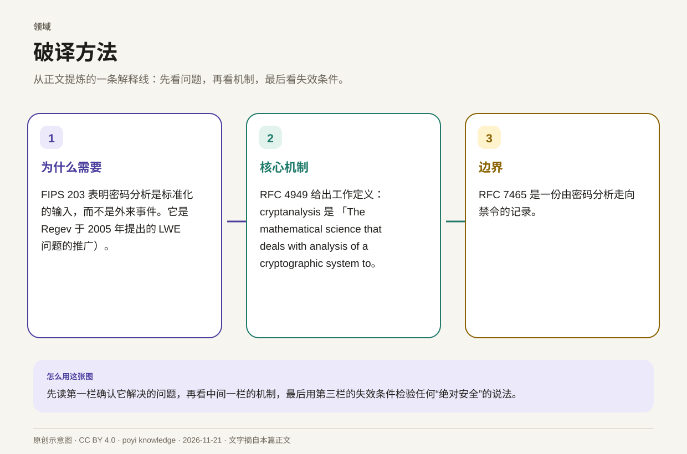

原理与机制
领域：破译方法（Cryptanalysis）。RFC 4949 给出工作定义：cryptanalysis 是 「The mathematical science that deals with analysis of a cryptographic system to gain knowledge needed to break or circumvent the protection that the system is designed to provide.」（研究分析密码系统以获取突破或绕过其防护所需知识的数学科学）。其教学注记先记录较早、较窄的目标——「Definition 2 states the traditional goal of cryptanalysis, i.e., convert cipher text to plain text (which usually is clear text) without knowing the key; but that definition applies only to encryption systems.」（定义 2 陈述了密码分析的传统目标：不知密钥而把密文还原为明文；但它只适用于加密系统）——随后明确拓宽：「Today, the term is used with reference to all kinds of cryptographic algorithms and key management, and definition 1 reflects that.」（如今该术语用于各类密码算法与密钥管理，定义 1 反映了这一点）。贯穿各定义的主线是一句话：「a cryptanalyst tries to uncover or reproduce someone else's sensitive data, such as clear text, a key, or an algorithm.」（分析者试图揭露或复现他人的敏感数据，如明文、密钥或算法）。方法目录紧随其后：「The basic cryptanalytic attacks on encryption systems are ciphertext-only, known-plaintext, chosen-plaintext,」（对加密系统的基本密码分析攻击有唯密文、已知明文、选择明文，）以及 「and these generalize to the other kinds of cryptography.」（并推广到其它种类的密码系统。）（清单最后一项 chosen-ciphertext 在换行处被连接规则吞掉连字符，故该句分两段引用、第三项用自有语言点名。）条目里来自 ISO 的第二个定义同样体现这种转变：「The analysis of a cryptographic system and/or its inputs and outputs to derive confidential variables and/or sensitive data including cleartext.」（分析密码系统及其输入与输出，以推出机密变量或含明文的敏感数据）——对象是输入与输出，而不只是密文。

为什么重要
FIPS 203 表明密码分析是标准化的输入，而不是外来事件。新标准随附的强度数字本身就是对他人攻击的分析结果：「Each of the parameter sets of ML-KEM comes with an associated security strength that was estimated based on current cryptanalysis (see Section 8 for details).」（ML-KEM 的每个参数组都配有依据当前密码分析估计的安全强度（详见第 8 节））。被分析的假设点名为：「The security of ML-KEM is based on the presumed hardness of the so-called Module Learning with Errors (MLWE) problem [9], which is a generalization of the Learning With Errors (LWE) problem introduced by Regev in 2005 [10].」（ML-KEM 的安全性基于 Module-LWE 问题的假定困难性；它是 Regev 于 2005 年提出的 LWE 问题的推广）。分析对象为何更换也印在文中：「The key establishment schemes specified in SP 800-56A and SP 800-56B are vulnerable to attacks that use sufficiently-capable quantum computers.」（SP 800-56A 与 SP 800-56B 规定的密钥建立方案易受足够强大量子计算机的攻击）。设计选择同样是对预期分析的回应：「Due to certain properties of the FO transform, the resulting KEM provides security in a significantly more general attack model than the PKE scheme.」（由于 FO 变换的某些性质，所得 KEM 在远更一般的攻击模型下提供安全性）。方案是照着攻击的地图被规定的——标准自己就是这样说的。
应用与实例
词汇表把这套分类变成了具名技术，该条目其余部分就是用这些名字思考的。唯密文攻击：「A cryptanalysis technique in which the analyst tries to determine the key solely from knowledge of intercepted cipher text」（分析者仅凭截获的密文试图确定密钥的密码分析技术）——更完整的词条还说明分析者可能知道算法、语言与可能的明文词。选择明文攻击：「A cryptanalysis technique in which the analyst tries to determine the key from knowledge of cipher text that corresponds to plain text selected (i.e., dictated) by the analyst.」（分析者利用由自己选定的明文所对应的密文来确定密钥的技术。）选择密文攻击把选择对象反过来：「A cryptanalysis technique in which the analyst tries to determine the key from knowledge of plain text that corresponds to cipher text selected (i.e., dictated) by the analyst.」（分析者利用对应到自己选定的密文的明文来确定密钥的技术。）暴力攻击同属一族：「A cryptanalysis technique or other kind of attack method involving an exhaustive procedure that tries a large number of possible solutions to the problem.」（穷举式地尝试大量可能解的密码分析技术或其它攻击方法。）词汇表还定义了成功的那个动词——break 是 「To successfully perform cryptanalysis and thus succeed in decrypting data or performing some other cryptographic function, without initially having knowledge of the key that the function requires.」（成功地实施密码分析，在起初不知所需密钥的情况下解密数据或完成其它密码功能）。留存文本没有在这些模型之间排出难度次序，只是点名。
边界与攻击面
RFC 7465 是一份由密码分析走向禁令的记录。RC4 「However, RC4 has long been known to have a variety of cryptographic weaknesses, e.g., see [PAU], [MAN], and [FLU].」（然而 RC4 早已被发现存在多种密码学弱点，见 [PAU]、[MAN] 与 [FLU]。）——它被广泛支持且常被 TLS 服务器偏好；随后 「Recent cryptanalysis results [ALF] exploit biases in the RC4 keystream to recover repeatedly encrypted plaintexts.」（近期的密码分析结果利用 RC4 密钥流的偏置，恢复被反复加密的明文。）攻击的代价印在同一段：「These recent results are on the verge of becoming practically exploitable; currently, they require 2^26 sessions or 13x2^30 encryptions.」（这些结果即将具备实际可利用性：目前需要 2^26 个会话或 13x2^30 次加密。）——这里的插入符指数记号在抽取中存活，照印刷形式引用。结论是 「As a result, RC4 can no longer be seen as providing a sufficient level of security for TLS sessions.」（因此 RC4 不能再被认为能为 TLS 会话提供足够的安全水平），并落为要求：「This document requires that Transport Layer Security (TLS) clients and servers never negotiate the use of RC4 cipher suites when they establish connections.」（本文要求 TLS 客户端与服务器建立连接时绝不协商使用 RC4 密码套件。）底层成果由该文档自己的参考清单指明：AlFardan、Bernstein、Paterson、Poettering 与 Schuldt 的 「On the Security of RC4 in TLS and WPA」（论 RC4 在 TLS 与 WPA 中的安全性），发表于 「USENIX Security Symposium, July 2013」（2013 年 7 月 USENIX Security 研讨会）——两个串都照 rfc7465.txt:154-156 的原样引用，没有从留存文件之外补任何会议或作者信息。
历史与背景
RFC 8017（第 15 行署 2016 年 11 月）在自己的参考清单里印出了一份带年代的密码分析年表。Dobbertin 的攻击以 「Cryptanalysis of MD4」（MD4 的密码分析）为题，载 Lecture Notes in Computer Science 第 1039 卷、1996 年（rfc8017.txt:2771-2773，题名片段照该行印刷形式引用）；Wang、Yao 与 Yao 以 「Cryptanalysis on SHA-1」（SHA-1 的密码分析）为题，载第 2442 卷、2005 年 2 月（第 2896-2898 行）；Manger 2001 年论文的题目片段 「A Chosen Ciphertext Attack on RSA Optimal」（针对 RSA 最优……的选择密文攻击）印在第 2765 行——该题名的其余部分跨过一段大缩进换行，因此只引用这一片段。叙述性附录把文献串成时间线：「The cryptanalysis of MD4 has progressed significantly in the intervening years.」（其间 MD4 的密码分析大幅推进），「There have also been advances in the cryptanalysis of SHA-1.」（SHA-1 的密码分析也有进展）。因此这份留存件能支撑的是一条具体年表：1996 至 2005 年间发表的、被 2016 年标准点名引用的攻击，以及该标准对 MD4/MD5 的降级和对 SHA-1 的回退兼容限定。这份文献没有印出谁最先使用 cryptanalysis 一词、这门学问始于何时；该条目另一来源（RFC 4949，2007 年 8 月）把该词记为现代数学科学，同样没有点名创始人，所以这里不讲述创始故事。
逐步示例与核验
范围模型
列出属于该条目的代表实体、相邻实体、时间断点与跨域关系；范围外对象不并入。
参考出处
- Wikipedia search entry for 破译方法. https://zh.wikipedia.org/w/index.php?search=%E7%A0%B4%E8%AF%91%E6%96%B9%E6%B3%95
- A Brief History of Cryptology and Cryptographic Algorithms (Dooley, Springer 2013). https://link.springer.com/book/10.1007/978-3-319-01628-3